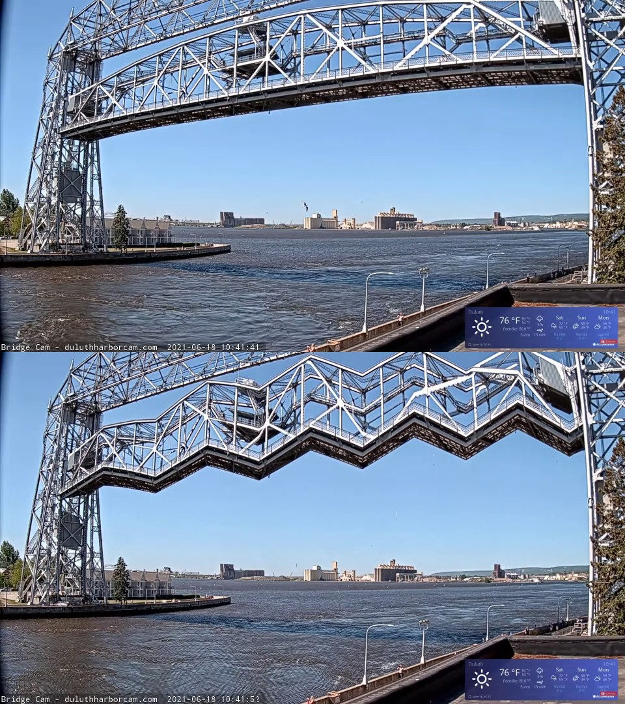
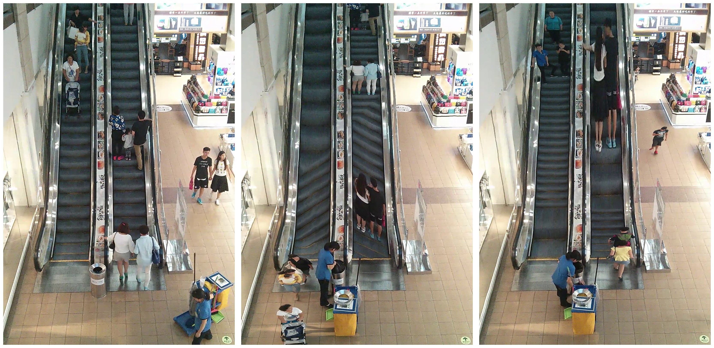
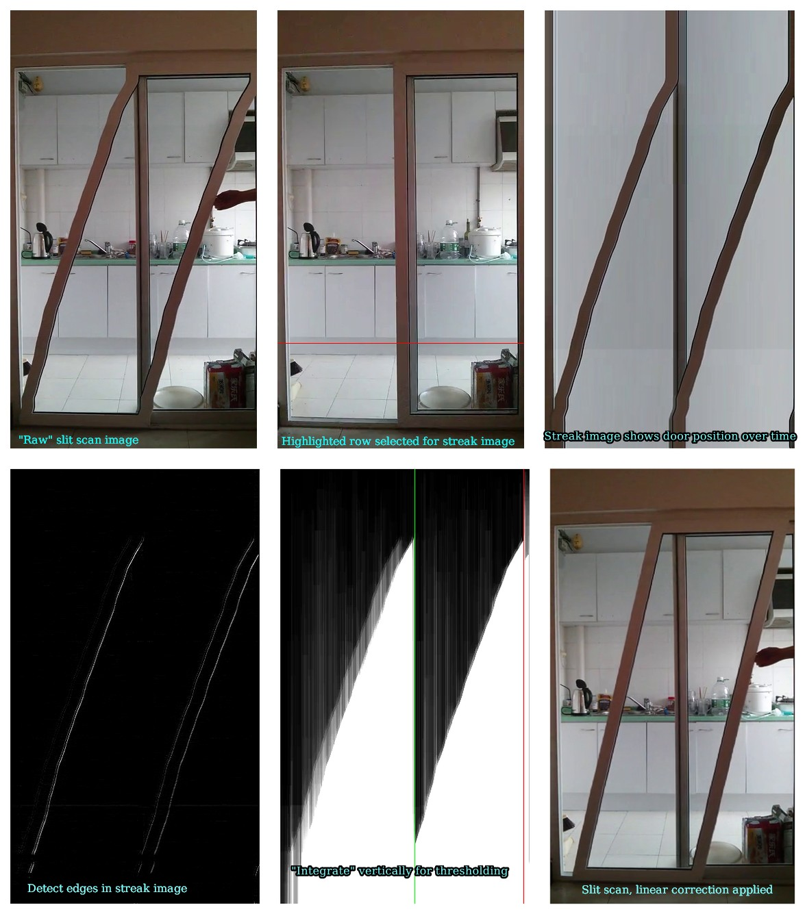
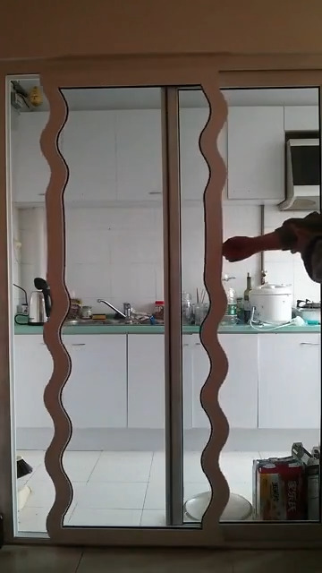
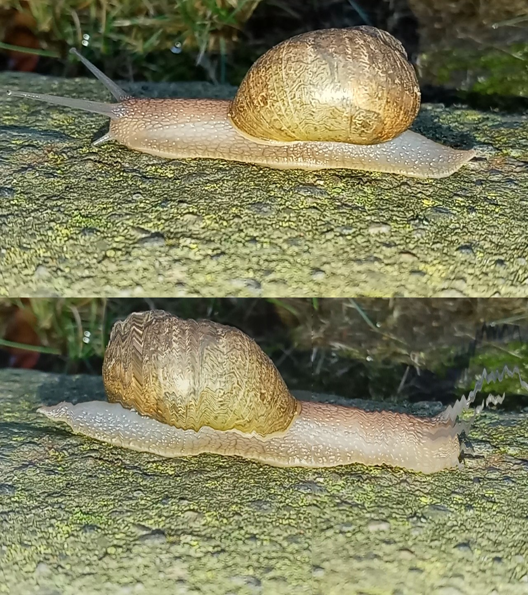

NOTE: Click any image to open in a new tab.

Above: Still image from source video.
Below: Sawtooth wave slit scan.

Left: Still image from source video.
Center: Combined row and column scanning.
Right: Bidirectional row scanning.

Resolving the "problem" of irregular motion, using a streak image and some computer programming.
Left: Still image from source video.
Center: Scanning by columns, moving with the flow of clouds.
Right: Scanning by columns, now against the flow of clouds.

Wave function with selected dampening.

Above: Still image from source video.
Below: Moving subject overtakes the scanning column (from right to left), reversing the orientation of the rendered image.